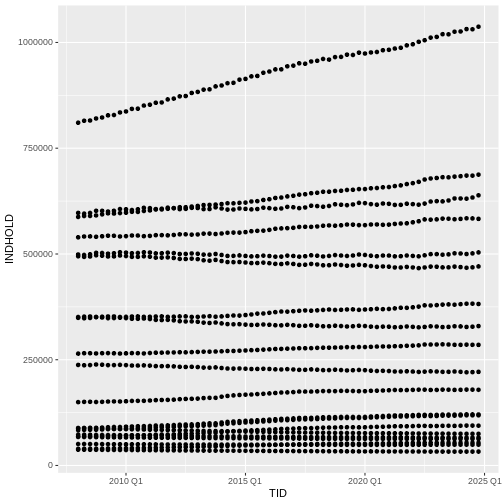
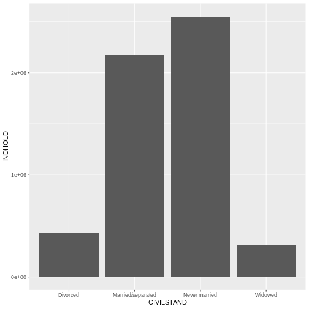
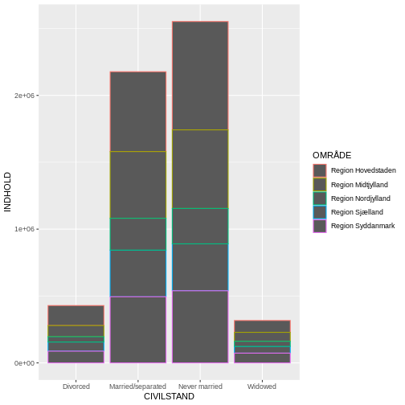

ggplot2
Last updated on 2024-08-02 | Edit this page
Estimated time: 12 minutes
Overview
Questions
- “What are the components of a ggplot?”
- “How do I create scatterplots, boxplots, and barplots?”
- “How can I change the aesthetics (ex. colour, transparency) of my plot?”
Objectives
- “Produce scatter plots, boxplots, and barplots using ggplot.”
- “Set universal plot settings.”
- “Describe what faceting is and apply faceting in ggplot.”
- “Modify the aesthetics of an existing ggplot plot (including axis labels and colour).”
- “Build complex and customized plots from data in a data frame.”
Det her - det når vi aldrig.
Nice data. How does it look?
R has some nice plotting functions build in.
ggplot2 is a package with more, nicer, plotting possibilities.
We start by loading the required package.
ggplot2 is also included in the
tidyverse package.
R
library(tidyverse)
If not still in the workspace, load the data we saved in the previous lesson.
R
SD_data <- read_csv2("data/SD_data.csv")
OUTPUT
ℹ Using "','" as decimal and "'.'" as grouping mark. Use `read_delim()` for more control.OUTPUT
Rows: 27720 Columns: 4
── Column specification ────────────────────────────────────────────────────────
Delimiter: ";"
chr (3): OMRÅDE, CIVILSTAND, TID
dbl (1): INDHOLD
ℹ Use `spec()` to retrieve the full column specification for this data.
ℹ Specify the column types or set `show_col_types = FALSE` to quiet this message.We read in data from a csv-file. That is stored as text, so we need to convert the “TID” column to something that can be understood as time by R:
R
SD_data <- SD_data %>% mutate(TID = yearquarter(TID))
Plotting with ggplot2
ggplot2 is a plotting package that
makes it simple to create complex plots from data stored in a data
frame. It provides a programmatic interface for specifying what
variables to plot, how they are displayed, and general visual
properties. Therefore, we only need minimal changes if the underlying
data change or if we decide to change from a bar plot to a scatterplot.
This helps in creating publication quality plots with minimal amounts of
adjustments and tweaking.
ggplot2 functions work best with data
in the ‘long’ format, i.e., a column for every dimension, and a row for
every observation. Well-structured data will save you lots of time when
making figures with ggplot2
ggplot graphics are built step by step by adding new elements. Adding layers in this fashion allows for extensive flexibility and customization of plots.
Each chart built with ggplot2 must include the following
Data
-
Aesthetic mapping (aes)
- Describes how variables are mapped onto graphical attributes
- Visual attribute of data including x-y axes, color, fill, shape, and
alpha
- Describes how variables are mapped onto graphical attributes
-
Geometric objects (geom)
- Determines how values are rendered graphically, as bars
(
geom_bar), scatterplot (geom_point), line (geom_line), etc.
- Determines how values are rendered graphically, as bars
(
Thus, the template for graphic in ggplot2 is:
<DATA> %>%
ggplot(aes(<MAPPINGS>)) +
<GEOM_FUNCTION>()Remember from the last lesson that the pipe operator
%>% places the result of the previous line(s) into the
first argument of the function. ggplot is
a function that expects a data frame to be the first argument. This
allows for us to change from specifying the data = argument
within the ggplot function and instead pipe the data into
the function.
- use the
ggplot()function and bind the plot to a specific data frame.
R
SD_data %>%
ggplot()
- define a mapping (using the aesthetic (
aes) function), by selecting the variables to be plotted and specifying how to present them in the graph, e.g. as x/y positions or characteristics such as size, shape, color, etc.
R
SD_data %>%
ggplot(aes(x = TID, y = INDHOLD))
-
add ‘geoms’ – graphical representations of the data in the plot (points, lines, bars).
ggplot2offers many different geoms; we will use some common ones today, including:-
geom_point()for scatter plots, dot plots, etc. -
geom_boxplot()for, well, boxplots! -
geom_line()for trend lines, time series, etc.
-
To add a geom to the plot use the + operator. Because we
have two continuous variables, let’s use geom_point()
first:
R
SD_data %>%
ggplot(aes(x = TID, y = INDHOLD)) +
geom_point()
 What we might note that the fact that we have ALL the municipalites
leads to a LOT of points.
What we might note that the fact that we have ALL the municipalites
leads to a LOT of points.
We could have done that when we extracted the data from Statistics Denmark. Alternatively we can do it now. Let us pull out all the regions.
R
plot_data <- SD_data %>%
filter(str_detect(OMRÅDE, "Region"))
We use the filter function - we have seen before. And it returns the rows in the data where the expression we write in the paranthesis is true.
From the package “stringr”, included in the tidyverse package, we get the function str_detect().
It detects if the string “Region” is present in the variable OMRÅDE. If it is, “Region” is detected, the expression is true, and filter() leaves the row.
Back to ggplot2
The + in the ggplot2
package is particularly useful because it allows you to modify existing
ggplot objects. This means you can easily set up plot
templates and conveniently explore different types of plots, so the
above plot can also be generated with code like this, similar to the
“intermediate steps” approach in the previous lesson. We are now
plotting the plot_data dataframe instead:
R
# Assign plot to a variable
data_plot <- plot_data %>%
ggplot(aes(x = TID, y = INDHOLD))
# Draw the plot as a dot plot
data_plot +
geom_point()
 A lot better.
Notes
- Anything you put in the
ggplot()function can be seen by any geom layers that you add (i.e., these are universal plot settings). This includes the x- and y-axis mapping you set up inaes(). - You can also specify mappings for a given geom independently of the
mapping defined globally in the
ggplot()function. - The
+sign used to add new layers must be placed at the end of the line containing the previous layer. If, instead, the+sign is added at the beginning of the line containing the new layer,ggplot2will not add the new layer and will return an error message.
R
## This is the correct syntax for adding layers
data_plot +
geom_point()
## This will not add the new layer and will return an error message
data_plot
+ geom_point()
Building your plots iteratively
Building plots with ggplot2 is
typically an iterative process. We start by defining the dataset we’ll
use, lay out the axes, and choose a geom:
R
plot_data %>%
ggplot(aes(x = TID, y = INDHOLD)) +
geom_point()

Then, we start modifying this plot to extract more information from it. We might want to color the points, based on the marriage status.
We place the color argument within the aes() function, because we want to map the values in “CIVILSTAND” to the
R
plot_data %>%
ggplot(aes(x = TID, y = INDHOLD, color = CIVILSTAND)) +
geom_point()

To colour each marriage status in the plot differently, you could use
a vector as an input to the argument
color. However, because we are now mapping
features of the data to a colour, instead of setting one colour for all
points, the colour of the points now needs to be set inside a call to
the aes function. When we map a variable
in our data to the colour of the points,
ggplot2 will provide a different colour
corresponding to the different values of the variable. We will continue
to specify the value of alpha,
width, and
height outside of the
aes function because we are using the same
value for every point. ggplot2 understands both the Commonwealth English
and American English spellings for colour, i.e., you can use either
color or colour. The plot aboge is an example
where we color points by the CIVILSTAND of
the observation.
Faceting
We still have a lot of information Rather than creating a single plot with points for each region, we may want to create multiple plot, where each plot shows the data for a single region.
ggplot2 has a special technique called
faceting that allows the user to split one plot into multiple
plots based on a factor included in the dataset. We will use it to split
our plot of CIVILSTAND against time, by
OMRÅDE, so each region has its own panel in a
multi-panel plot:
R
plot_data %>%
ggplot(aes(x = TID, y = INDHOLD, color = CIVILSTAND)) +
geom_point() +
facet_wrap(~OMRÅDE)

Click the “Zoom” button in your RStudio plots pane to view a larger version of this plot.
Boxplot
We can use boxplots to visualize the distribution of observations for each CIVILSTAND:
R
plot_data %>%
ggplot(aes(x = CIVILSTAND, y = INDHOLD)) +
geom_boxplot()
 Let us be frank - a boxplot of these aggregated data is not really that
useful. Boxplots are however so useful, that it is relevant to show how
they are made.
Let us be frank - a boxplot of these aggregated data is not really that
useful. Boxplots are however so useful, that it is relevant to show how
they are made.
By adding points to a boxplot, we can have a better idea of the number of measurements and of their distribution:
R
plot_data %>%
ggplot(aes(x = CIVILSTAND, y = INDHOLD)) +
geom_boxplot() +
geom_jitter(alpha = 0.5,
color = "tomato",
width = 0.2,
height = 0.2)
 Jitter is a special way of plotting points. When we plot the points at
their exact location, we risk that some of the points overlap.
geom_jitter adds a small bit of noise to the data, in order to spread
them out. That way we can better see individual points.
Jitter is a special way of plotting points. When we plot the points at
their exact location, we risk that some of the points overlap.
geom_jitter adds a small bit of noise to the data, in order to spread
them out. That way we can better see individual points.
Notice how the boxplot layer is behind the jitter layer? What do you need to change in the code to put the boxplot in behind the points such that it’s not hidden?
Barplots
Barplots are also useful for visualizing categorical data. By
default, geom_bar accepts a variable for x, and plots the
number of instances each value of x (in this case, wall type) appears in
the dataset.
R
plot_data %>%
ggplot(aes(x = CIVILSTAND)) +
geom_bar()
We have an equal number of datapoints for each value of “CIVILSTAND”. Not that useful.
Rather than using the default “count” of values, we can use the values directly. In that case, we need to provide both the x- and the y-values; ggplot does not calculate them!
R
plot_data %>% ggplot(aes(CIVILSTAND, INDHOLD)) +
geom_bar(stat="identity")
 Now we get the values from INDHOLD plotted on the y-axis. But we get ALL
the values from INDHOLD plotted. And we have INDHOLD from several years,
from several administrative parts of Denmark.
Now we get the values from INDHOLD plotted on the y-axis. But we get ALL
the values from INDHOLD plotted. And we have INDHOLD from several years,
from several administrative parts of Denmark.
Let us filter the data.
str_detect(OMRÅDE, “Region”) picks out the rows containing the text “Region”.
TID == yearquarter(“2008 Q1”) picks out the rows containing data from the first quarter of 2008. Note that we have to convert “2008 Q1” to the same datatype as is contained in the columns, using the yearquarter() function.
R
plot_data %>%
filter(str_detect(OMRÅDE, "Region"),
TID == yearquarter("2008 Q1")) %>%
ggplot(aes(CIVILSTAND, INDHOLD)) +
geom_bar(stat= "identity")
 Now we get more sensible numbers. But each bar is still the sum of the number of divorced persons in ALL the regions.
We can color bars by region:
R
plot_data %>%
filter(str_detect(OMRÅDE, "Region"),
TID == yearquarter("2008 Q1")) %>%
ggplot(aes(CIVILSTAND, INDHOLD, color=OMRÅDE)) +
geom_bar(stat= "identity")
 Oops! Color only colors the outline of the bars. We can do better.
We can use the fill aesthetic for the
geom_bar() geom to colour bars by the portion of each count
that is from each OMRÅDE.
R
plot_data %>%
filter(str_detect(OMRÅDE, "Region"),
TID == yearquarter("2008 Q1")) %>%
ggplot(aes(CIVILSTAND, INDHOLD, fill=OMRÅDE)) +
geom_bar(stat= "identity")

This creates a stacked bar chart. These are generally more difficult
to read than side-by-side bars. We can separate the portions of the
stacked bar that correspond to each OMRÅDE and put them side-by-side by
using the position argument for geom_bar() and
setting it to “dodge”.
R
plot_data %>%
filter(str_detect(OMRÅDE, "Region"),
TID == yearquarter("2008 Q1")) %>%
ggplot(aes(CIVILSTAND, INDHOLD, fill=OMRÅDE)) +
geom_bar(stat= "identity", position = "dodge")

Adding Labels and Titles
By default, the axes labels on a plot are determined by the name of
the variable being plotted. However,
ggplot2 offers lots of customization
options, like specifying the axes labels, and adding a title to the plot
with relatively few lines of code. We will add more informative x-and
y-axis labels to our plot, a more explanatory label to the legend, and a
plot title.
The labs function takes the following arguments:
-
title– to produce a plot title -
subtitle– to produce a plot subtitle (smaller text placed beneath the title) -
caption– a caption for the plot -
...– any pair of name and value for aesthetics used in the plot (e.g.,x,y,fill,color,size)
R
plot_data %>%
filter(str_detect(OMRÅDE, "Region"),
TID == yearquarter("2008 Q1")) %>%
ggplot(aes(CIVILSTAND, INDHOLD, fill=OMRÅDE)) +
geom_bar(stat= "identity", position = "dodge") +
labs(title = "Civilstand by region",
subtitle = "First quarter of 2008",
x = "Region",
y = "Number",
caption = "Pattern appears similar between the regions. Data from Statistics Denmark")
Usually plots with white background look more readable when printed.
We can set the background to white using the function
theme_bw(). Additionally, you can remove the grid:
R
plot_data %>%
filter(str_detect(OMRÅDE, "Region"),
TID == yearquarter("2008 Q1")) %>%
ggplot(aes(CIVILSTAND, INDHOLD, fill=OMRÅDE)) +
geom_bar(stat= "identity", position = "dodge") +
labs(title = "Civilstand by region",
subtitle = "First quarter of 2008",
x = "Region",
y = "Number",
caption = "Pattern appears similar between the regions. Data from Statistics Denmark") +
theme_bw() +
theme(panel.grid = element_blank())

Key Points
- “
ggplot2is a flexible and useful tool for creating plots in R.” - “The data set and coordinate system can be defined using the
ggplotfunction.” - “Additional layers, including geoms, are added using the
+operator.” - “Boxplots are useful for visualizing the distribution of a continuous variable.”
- “Barplots are useful for visualizing categorical data.”
- “Faceting allows you to generate multiple plots based on a categorical variable.”